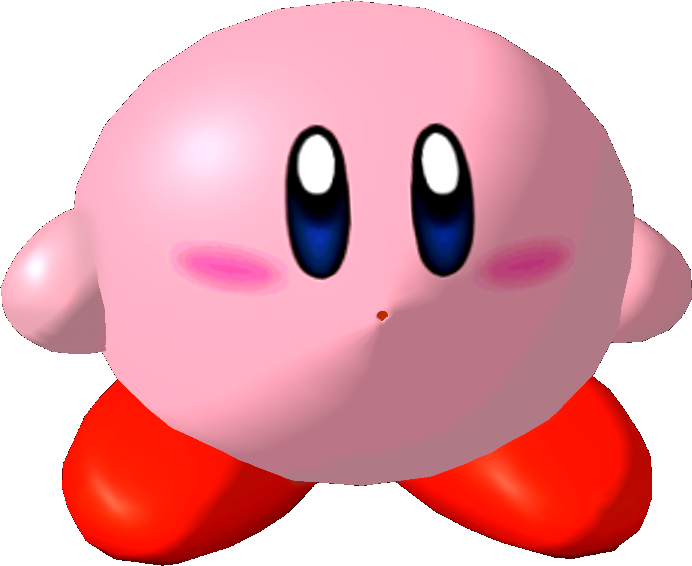

|  | Ranked 26th of tier list : KIRBY |
| Weight | |
|---|---|
| 23th heaviest (22nd in PAL) | |
| Shield stats | |
| Roll lenght | 21th longest |
| Shield size | 13-14th biggest |
| Grab range | 7th longest |
| Wavedash lenght | 20-21th longest |
| Movement stats | |
| Walking speed | 19-21st fastest |
| Turning speed | 17-18th fastest |
| Running speed | 16-20th fastest |
| Aerial stats | |
| Jump squat | 4 frames (1st fastest) |
| Short hop | 9-11th highest |
| Aerial speed | 21-22nd fastest |
| First jump height | 25th highest |
| Seconde jump height | 1-2nd highest |
| Total jump height | 6-8th highest |
| Average fall speed | 21-22th fastest |
| Fast falling speed | 21-24th fastest |
| Falling speed | 19-21st fastest |
| Ledge stats | |
| 0-99% ledge roll | 15th longest |
| 100%+ ledge roll | 16th longest |
| 0-99% ledge attack range | 11th farthest |
| 100%+ ledge attack range | 11th farthest |
| Intangible ledgedash (Optimal) | 12 frames |
| Notable players | |
| Triple R, Cereal Rabbit | |
| Smashboard forum | |
| http://smashboards.com/forums/kirby.80/ | |
Currently, Kirby is ranked 26th in the G tier at the very bottom. While he has some interesting throw options and a decent edgeguarding game, Kirbys approach and KO ability are among the worst in the game; slow attacks, a low air speed, an ineffective projectile, and numerous other flaws on both the ground and air prevent Kirby from easily approaching enemies, and he struggles against almost all characters as a result of this. Kirby currently has only two positive matchups (against Bowser and Roy), and even these can be disputed at length.